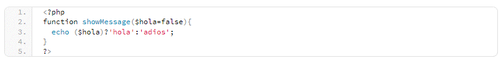

Aquí podrás encontrar una serie de preguntas y respuestas de entrevista de PHP para desarrolladores. Estas preguntas han sido formuladas a partir de desarrolladores experimentados quienes han compartido sus preguntas y respuestas y que te van a ayudar mucho durante una entrevista de trabajo. Ten en cuenta que también te van a ser de utilidad si eres principiante y te estas familiarizando con el lenguaje PHP.
Los dos permiten incluir un archivo específico. Sin embargo, con la función require() el proceso termina con un error fatal si el archivo no puede ser incluido. Mientras que con include() el proceso puede pasar y saltárselo al próximo paso en la ejecución.
La solución mas simple es utilizando el siguiente código:
Pero también se pueden escribir scripts, sin importar el número de líneas.
El unset() utiliza una variable en "undefined" mientras que unlink() elimina un archivo que le pasamos desde el sistema de archivos.
En PHP, se pueden encontrar tres tipos de errores:
Avisos (notices): Son errores básicamente simples y no son críticos, pueden producirse mientras se ejecute el script. Un ejemplo de un aviso puede ser accesar a una variable indefinida.
Advertencias (warnings): son errores con más importancia que los avisos, pero con estas, los scripts siguen realizando la ejecución. Ejemplo de ello, puede ser usando include() tratando de incluir un archivo que no existe.
Fatal: Con este tipo de error se da por terminada la ejecución del script. Un ejemplo de que hay un error fatal es cuando se accede a un objeto que no existe o requieres de un archivo que tampoco existe.
Es importante comprender los tipos de errores porque ayudan a los desarrolladores a comprender lo que ocurre mientras se desarrolla y pasa durante la depuración.
-GET presenta datos que se envían como parte de la URL, mientras en POST la información no se ve porque codificada en el proceso.
-GET puede utilizar hasta 2048 caracteres, POST no presenta cantidad definida.
-GET sólo acepta datos ASCII, POST acepta cualquier tipo de datos, hasta los binarios están permitidos.
-Básicamente, GET es utilizado para recuperar datos. Pero POST para insertar y actualizar.
Entender los fundamentos del protocolo HTTP es importante para un desarrollador de PHP, y las diferencias entre GET y POST son parte esencial de ello.
Mientras se hace el proceso de depuración es importante habilitar los mensajes de error porque de esta manera se puede identificar de manera instantánea donde se produce el error y si el script trabaja correctamente.
Es un mecanismo PHP que no admite la herencia múltiple, un trait no se puede instanciar por sí solo. Todo desarrollador debe conocer el potencial de las características del lenguaje con el cual estä trabajando, podemos destacar que Trait es una de estas.
Mientras dura la ejecución de PHP, no se puede cambiar el valor de una constante, porque ya se ha declarado.
No, la extensión de una clase definida final no se puede dar porque evita que el método o clase secundaria prevalezca.
En PHP, todas las cosas constan de los métodos Constructor y Destructor, debido a que los traen ya incorporados. El Constructor es llamado inmediatamente cuando se crea una instancia de clase y es utilizado para iniciar las propiedades de la clase. El método destructor no usa ningún parámetro. Cuando se utiliza esto en PHP, es señal que quien trabaja conoce los conceptos de POO (programación orientada a objetos) en el lenguaje PHP.
Se puede obtener a través de la función count () la cual se usa para conocer la cantidad de elementos de un array. Todo desarrollador necesita comprender los arrays y funciones que estén relacionadas con ellos.
Si 'hola' es 'true' entonces la función debe imprimirse 'hola' pero si la función no recibe 'hello' o mas bien 'hello' es 'falso' entonces la funcion debe imprimir 'adios'.
Con la pregunta, se puede conocer si el desarrollador, identifica la sintaxis 'if', y como puede imprimir texto.
En esta pregunta, se puede evaluar si el desarrollador sabe cómo declarar una función y cómo manejarían el hecho de que el parámetro pueda o no pueda estar en la llamada de función. También puede evaluar si el desarrollador conoce la sintaxis 'if' y cómo imprimir 'text(echo function).
Con la función explode, una de las más usadas en PHP, el desarrollador la debe conocer si o si. Esta pregunta no tiene una sola respuesta pero la que sea, debe ser parecida a ésta.
Esta pregunta tiene la intención de evaluar el conocimiento que el aspirante tiene sobre gestión y validación. Puede tener varias respuestas, pero debe ser similar a esta.
La pregunta pretende evaluar conocimientos del candidato sobre POO.
Privado (private): Es visible sólo en su clase propia.
Público (public): Es visible con cualquier código que pueda acceder a la clase.
Protegido (protected): Se puede ver sólo para clases padre(s) y clases que agranden la clase actual.
Todo desarrollador PHP debe conocer esto porque le permitirá demostrar que puede ser capaz de construir aplicaciones, además de escribir códigos. Sin embargo, es necesario entender la accesibilidad y privilegios de este código.
Los Getters y Setters son métodos que se utilizan para obtener los valores que tienen las variables. En su mayoría son privadas, además de importantes, ya que, permiten una localización central, capaz de conducir a los datos declarados o reenviarlos al desarrollador. Un ejemplo de esto sería un nombre de usuario. Si un setter no está siendo utilizado y el desarrollador esta declarando la variable $userName a mano, podria encontrarse con un resultado como: 'luis', 'LUIS', 'LuIs', ' ', etc. Entonces, con un setter, el desarrollador no sólo puede ajustar el valor, por ejemplo, usando ucfirst($userName) sino que también puede manejar situaciones donde los datos no son válidos, como el ejemplo donde ' ' no tiene nada. Lo mismo se aplica a un getter, cuando se muestran los datos, se pueden modificar los resultados para que incluyan strtoupper($userName) en el formato adecuado más adelante en la cadena.
Esto es muy importante para un desarrollador que quiera entrar en un trabajo de equipo para el desarrollo de aplicaciones. Los Getters y Setters son utilizados a menudo cuando se trata de objetos, específicamente en los que terminan en una base de datos o cualquier otro medio de almacenamiento. Como PHP es usado para la construcción de aplicaciones web, los desarrolladores se van a ejecutar por medio de getters y setters en espacios más avanzados. Tienen poder, sin embargo, no se comenta mucho de ellos. Para un desarrollador es bueno demostrar que los conoce y que los puede usar desde el principio.
Con MVC, se identifica al controlador Model View Controller, el cual sirve para manejar los datos que le pasan por la vista. Este controlador se responsabiliza de interpretar los datos que se envían por la vista y de la dispersión de estos datos a modelos apropiados, esperando que los resultados regresen a la vista. Su tarea o trabajo tiene que ver exactamente con la aplicación o función. Los modelos interactúan con su base de datos u otro sistema de almacenamiento y lo relacionado con resultados.
La vista es pasada por el controlador y mostrada al usuario. El patrón de diseño de MVC , ha utilizado en los últimos años mucho, y ayuda a comprender de mejor manera lo que se está usando, como un todo, a nivel industrial. También, para el diseño es excelente, por lo que, es bueno conocerlo. El Modelo se divide en múltiples componentes para realizar tareas relacionadas con datos de la base de datos, lógica del negocio, entre otros.
Para enviar algo al navegador, el candidato debe usar código que cambie primero las cabeceras HTTP. Una vez que el desarrollador elimine el buffer, no tiene oportunidad de establecer encabezados o cookies.
Las inyecciones SQL es el método utilizado para alterar una pregunta en una instrucción SQL que ha sido enviada al servidor de base de datos. Esa consulta que ha sido cambiada puede filtrar información como las combinaciones de nombre de usuario/contraseña y puede ayudar al intruso a que comprometa al servidor.
Para evitar las inyecciones de SQL, es necesario revisar las entradas del usuario. En PHP, esto se olvida a veces debido al fácil acceso que hay a $_GET y $_POST, y los desarrolladores que no tienen experiencia, cometen ese error. {ero también, hay otras maneras con las que los usuarios pueden transformar las variables que se utilizan en alguna consulta SQL por medio de cookies o archivos cargados. La única protección es utilizar las declaraciones preparadas de manera consistente. Lo ideal es usar Doctrine o Propel para deshacerse de escribir consultas SQL todas juntas y usar object-relational mapping la cual que une las filas de la base de datos con los objetos de la aplicación.
El cero inicial indica un número octal en PHP, el número se evalúa con el número decimal 14 en lugar del decidmal 16. El código de salida debe ser 7.
Sería usado para comprobar un tipo determinado como entero o un booleano, el === lo va a hacer exactamente como se esperaría de un lenguaje fuertemente tipado, mientras que == convertiría los datos temporalmente y trataría de coincidir con los tipos de ambos operandos. El operador de identidad (===) también se desempeña mejor al no tener que hacer la conversión de tipos. Se debe evitar hacer uso de ==, en especial, cuando se revisan variables de verdadero y falso, ya que, tomaría en cuenta 0/1 u otra representación parecida.
Los PSR son recomendaciones de Estándares de PHP cuyo objetivo es estandarizar los aspectos comunes de Desarrollo PHP. Ejemplo de PSR es PSR-2, que es una guía de estilo de codificación.
Se debe seguir un PSR, ya que, los estándares de codificación cambian frecuentemente en desarrolladores y compañías, lo que causa inconvenientes al revisar o mejorar el código de otro desarrollador y así, encontrar una estructura de código distinta a la propia.
Un estándar PSR permite racionalizar expectativas de cómo debe verse el código, disminuyendo la confusión y los errores de sintaxis.
Si, Composer es una herramienta usada para gestionar dependencias. El beneficio es una forma consistente de administrar las bibliotecas, por lo que, se dedica menos tiempo a administrar las bibliotecas. Se declaran las bibliotecas en las que se basa su producto y composer se encarga de gestionar la instalación y actualización de estas bibliotecas.